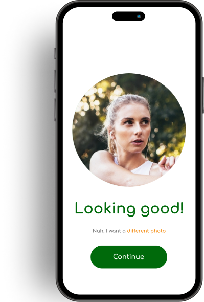

User Research
We started by building a proto-persona to define the research questions we would use to begin the ideation phase.
We asked 7 potential users with ages ranging from their early 20s through their 60s.
Questions included:
- What inspires you to seek outdoor adventures and experiences?
- Do you decide on where to go based on what you can do?
- How do you discover the activities you want to do?

Research Synthesis
After our interviews, we grouped and collated our findings into an Affinity Map to better understand their travel needs and wants for a new app.
This allowed us to create our Value Proposition on focus on the features we needed.
Competitive Analysis
In order to understand the strengths and weaknesses within the same market, we downloaded and analyzed other travel apps to understand their signup process.
TripAdvisor
Strength: Easy sign-up with minimal steps.
Weakness: Intrusive modals for permissions. Boring and uninspired design. No social sign-ups.
AllTrails
Strength: Engaging splash page with the ability to use a social sign-up right away. Coaching page showcases app's abilities.
Weakness: Sign-up process was broken up into too many screens. Upsell at the end was difficult to bypass.
Wanderlog
Strength: Clean design. Good layout that presents many options. Call to action after sign-up.
Weakness: Additional informational questions were intrusive, as was the upsell page, which had a broken carousel.
Komoot
Strength: Beautiful design with social logins. Building a profile at the beginning cements app's abilities. Responsive feedback.
Weakness: Too many pages for entering information still and the overall process could be simplified. Pairing devices could be saved for a later step. Entire process is a bit too top-heavy.
Persona
User insights from our research and interviews helped us create our persona that reflected our target user base.
Interaction & UI Design
User Flow
We mapped out the sign-up process to compare against potential competitors within the space to balance ease of sign-up with guided information and speed.
Style Guide
To create a consistent user experience, we picked a small number of colors that evoked an outdoorsy, adventurous spirit, hoping to let pictures do most of the “talking.”
Lo-Fi Wireframing
We followed this up with a workable lo-fi prototype to test our sign-up flow.
The Prototype
With one more round of usability testing using the lo-fi prototype, we took that additional feedback and created a fun and approachable app to help adventure travelers more easily plan their destination vacations.
{kind=link}
{kind=link}
{kind=link}
{kind=link}
{kind=link}
{kind=link}
{kind=link}
{kind=link}